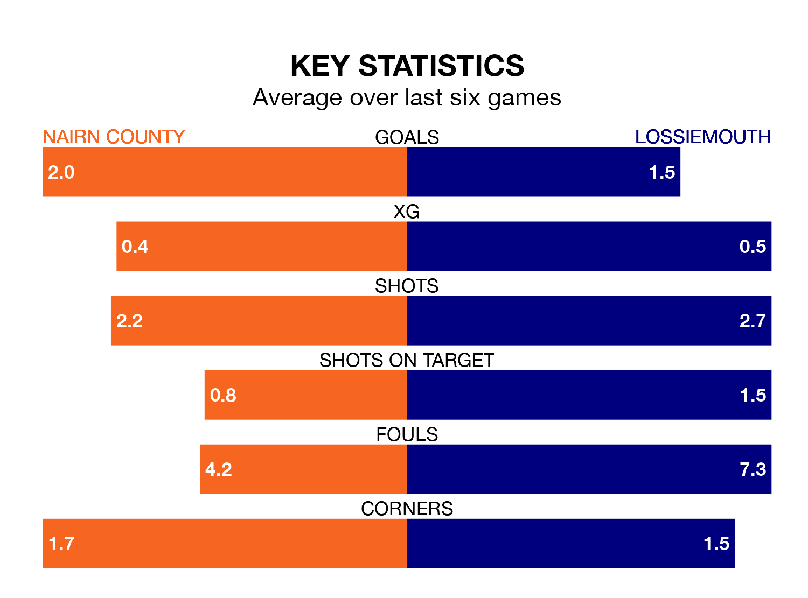

Lossiemouth come to Station Park to play Nairn County on Saturday in poor form, having collected just four points from their last six games.
The visitors have won one and drawn one of their last six fixtures, while Nairn have four wins and a draw.
In the last 10 years, Nairn and Lossiemouth have played each other on 12 occasions. Nairn won eight of them, Lossiemouth two, and they drew twice.
On average, Nairn scored 2.8 goals and Lossiemouth 1.4 in those matches.
Their last meeting was on September 9, when Nairn won 4-1 away.
With 20 goals in 17 games so far this season, Lossiemouth are the league's third-lowest scorers with 1.2 goals per game. And they are conceding at an average rate, letting in 32 goals at a rate of 1.9 per game.
Nairn, meanwhile, are average scorers, with 1.9 goals per game. They have conceded 1.5 goals per game.
County are sixth in the table after 18 games, of which they have won 11 and drawn one, earning 34 points.
The visitors are seven places behind the home side in 13th, with four wins and three draws putting them on 15 points.
Nairn's last match was on January 6, a 1-0 loss against Brechin City.
Lossiemouth lost 5-1 against Banks O' Dee last time out, on January 13.
Updated: 13:09 (UTC), 17/01/24